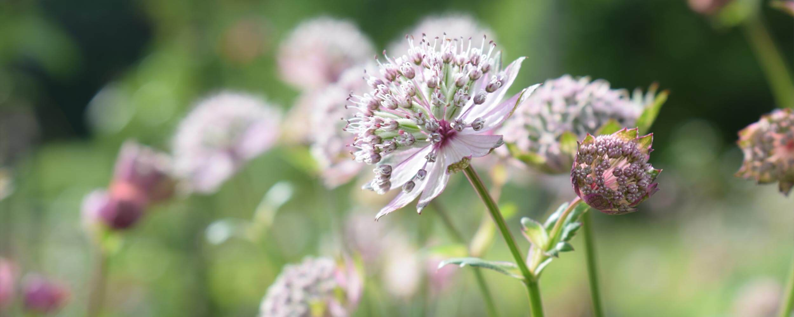
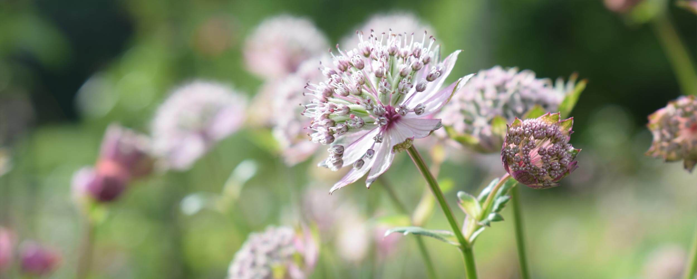

Welcome to the new Flowers of the Forest website! My name is Sally Bourne and I am fortunate enough to live in the heart of the beautiful Galloway Forest Park in south west Scotland where I have my little flower farm in the gardens surrounding my house.
I have been growing and picking flowers for as long as I can remember. I had a very rural upbringing and one of my first memories is of sowing a packet of nasturtiums with my granny, a skilled gardener and flower arranger. Throughout the spring and summer months there would always be jugs and vases of garden flowers in the house. Her arrangements had that artless, natural look which l aim to achieve myself.
Growing flowers for sale was a dream I had for many years. While my four children were small most of my gardening efforts were geared towards producing fresh fruit and vegetables, but I had a little area for the roses, lavender and other herbs that I love so much and I grew a few rows of flowers for cutting in amongst the vegetables. About six years ago, with my family all grown up by that time, I built some raised beds in my back garden and started growing flowers especially for cutting on a more intensive level. The following year I set up my micro business, Flowers of the Forest and began selling my arrangements at local markets. I have also provided flowers for weddings and special events.
Last year I became a member of Flowers from the Farm, an association for British flower farmers and florists which promotes the use of British grown flowers and supports British growers. I had hesitated about joining as I grow and sell my flowers on such a small scale, but I have found it to be a wonderful resource and there are many other members growing on a garden scale. The association has members all over the UK. If you want flowers delivered outside the area that I cover or if I can’t help you for some reason, please take a look at the “Find Flowers” section of the Flowers from the Farm website. Some members will even send flowers by mail. There are also some who make beautiful dried flower arrangements which are especially welcome through the winter months when fresh British flowers are scarce.
I grow all the flowers and foliage that I sell myself and I choose the best of what is available on the day when I am harvesting and arranging my flowers. I am very dependent on the weather, which has a big effect on when my flower season starts and finishes, but I usually have flowers available from March until September or October. No two arrangements that I create are identical. My flowers are fresh, usually scented, and you won’t find anything quite like them in the supermarkets or on petrol stations forecourts. They are truly seasonal, and to me that’s part of their charm. Who wants daffodils in autumn and chrysanthemums in spring?
I have no plans to expand my flower growing enterprise. I have less than an acre of growing space. My aim is to grow as many beautiful flowers in the space I have available. I don’t have any paid help in my garden, but my four children all lend a hand when they are home. I am ambitious only in that I want everyone who buys my flowers to love them and enjoy them.
I don’t have organic certification by the Soil Association, but I have always tried to follow organic principles. I don’t use any pesticides or herbicides. My flowers are fed mostly with my own homemade compost and liquid feeds. Growing flowers for cutting creates a huge amount of garden waste and this is all composted and returned to the soil. Pollinating insects such as bees, hoverflies and butterflies are numerous on my plot and they love my flowers as much as I do. The compost that I buy in for raising seeds and cuttings is organic and peat free. All the packaging materials that I use are biodegradable or can be recycled. I don’t use floral foam or chemical flower food. Apart from my electric propagators, which I use to germinate seeds in the cooler months, my flowers are grown without any artificial heat, outdoors or in my greenhouse and polytunnels. Flowers grown in this way have a much lower carbon footprint than imported flowers.
More than eighty percent of flowers on sale in the UK are imported. Many of them will have been grown in vast polytunnels in South Africa and South America using high levels of chemical fertilisers, pesticides and herbicides, some of which have been banned for use in the UK and Europe for many years. By the time your imported bouquet of flowers reaches you the flowers will probably have been cut for a week or more. They may have been treated with a cocktail of possibly harmful chemicals and flown half way around the world. Cut flowers are a luxury item, but locally grown flowers, grown in a sustainable way, are an innocent luxury and they make a wonderful gift, whatever the occasion. There’s never a wrong time to give flowers.
I am now offering Friday Flowers delivered locally to Glentrool Village, Newton Stewart, Wigtown and nearby villages.
I have not given a number of stems for each arrangement as this depends on the flowers that I am using, which vary from week to week. All of my arrangements have a generous amount of beautiful flowers and foliage.
All prices include delivery. Your flowers will be delivered in water. I use glass jars or vases as they are easy to clean and can be recycled. Please place your order for Friday Flowers before 10pm the previous Wednesday as I cut and arrange flowers to order.
If you want flowers on a particular day other than a Friday or you want flowers delivered outside the area that I usually cover please contact me.
As I am growing and selling my flowers on a very small scale I don’t have an online payment facility. Please contact me to order flowers and arrange payment.
Email: flowersoftheforest15@gmail.com
Mobile: 07789 105721
Approximate height 25cm
Approximate height 30cm
Approximate height 40cm
Approximate height 60cm
A collection of three jam jar posies in a little wooden crate.
Four jam jar posies in a wooden carrier. The carrier will hold four beer or wine bottles once the flowers have faded.
I make these to order, sizes small, medium and large. The smallest size is done on a 10” frame and measures about 12” in diameter with the foliage. The medium size is made on a 12” frame and measures about 14” with the foliage. The largest size is made on a 16” frame and measures about 18” with the foliage. I can make larger wreaths, but I buy the wire frames and I would need to order larger sizes as I don’t have them in stock. I attach moss to the wire frame using jute twine so that it is completely covered. This means that the wire frame won’t show and the damp moss also keeps the foliage fresh. Displayed outside one of these will last for several weeks. I then use fine wire to attach the foliage. Customers sometimes return the wreaths to me so that I can reuse the wire frame. I don’t use any plastics or floral foam. Prices £15, £20 and £25.
I make these with fresh foliage, berries and cones on a mossed wire base. They come with a pillar candle in a clear hurricane glass holder. The table centres are approximately 6” tall by 9” in diameter. Shown here is a traditional Christmas table centre, but I can also make them with flowers and foliage for birthday parties, weddings or other celebrations. Price £25.
If you are planning a wedding, want flowers for a special event or if you want beautiful, natural looking flowers for a funeral please contact me and I will do my best to help.
Cut flowers are always a fleeting pleasure, but following these simple steps will help to keep your posy or bouquet fresh for as long as possible.
Please take care when handling your flowers! Some have thorns or prickles, some are toxic and some are skin irritants. It is important that the container you use to display your flowers is scrupulously clean. The kindest thing you can do for your flowers is to keep the water they are in clean and fresh by changing it daily. If you remove the flowers from the container that you are using, wash it out and fill it with fresh water before you replace the flowers every day, your flowers will last much longer than if they are sitting in dirty, slimy water or worse still, no water at all!
Keeping your arrangement in a cool place and out of direct sunlight and away from heat sources will also help your flowers to stay looking fresh. You can try snipping a little off the ends of the stems while you are changing the water which can help your flowers stay hydrated. It is best to keep your flowers away from ripening fruit, especially bananas. I don’t use cut flower food as after years of trial and error I have found that plain fresh water is better for keeping flowers looking good than any chemicals.